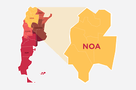
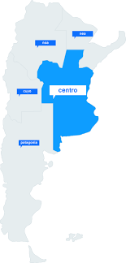
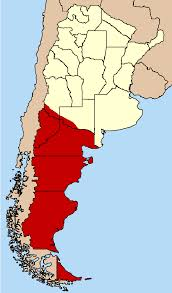

Las comidas típicas del norte argentino incluyen empanadas, locro, tamales, humita, y vinos de altura. La gastronomía de esta región muestra influencias aborígenes, españolas, indígenas, y andinas.

Las comidas típicas de la región central de Argentina incluyen albóndigas de pescado, varenikes de papa, leikaj, locro, carbonada, empanadas, y otros platos

Las comidas típicas del sur argentino incluyen cordero, trucha, centolla, ciervo, jabalí, hongos, chocolates, cervezas artesanales y vinos